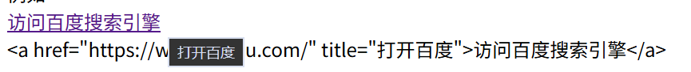
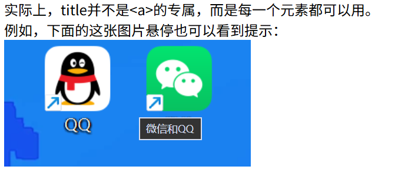

html里可以用<a>来跳转到别的位置
基本用法是
<a href="目标地址">链接文字</a>
当然链接文字可以换成图片甚至别的块状元素，如
<a href="目标地址">
<img src="图片地址" alt ="图片">
</a>
就会以图片形式显示链接，如下面的文字和图片，在连接网络并稳定情况下，点击均会跳转到百度搜索引擎（www.baidu.com）
除了可以跳转网络上的网址，也可以用来跳转到别的需要的地方。
不同跳转目标和用法如下：
http://或https:// #id，注意跳转其他页面需要在#id前加上对应的页面的地址mailtotel和smsdownload，需要注意的是同域的文件可以直接下载，跨域（比如去别的网站）则需要考虑对话网站服务器的权限设置
注意到id这一概念，这是一个可以在html文件里面给一个元素写的标识，可以用于跳转
例如可以写<p id="元素a">，这样可以用于<a>跳转等功能。
下面是上述除了网络外部链接外的实现：
跳转回到首页（main.html）
代码为：<a href="../main.html">跳转回到首页（main.html）</a>
跳转到本页面的顶部。
代码为：<a href="#页面顶部">跳转到本页面的顶部</a>
打开系统默认的电子邮箱软件准备发邮件给test@example.com
代码为：<a href="mailto:test@example.com">打开系统默认的电子邮箱准备发邮件给test@example.com</a>
打开默认电话准备拨打给+8613800000000
代码为：< href="tel:+8613800000000">拨打电话</a>
打开短信准备发短信给+8613800000000
代码为：<a href="sms:+8613800000000">发送短信</a>
注意此处电脑端可能因为软件和硬件原因无法拨打电话和发短信。
从files/report.pdf下载report.pdf并重命名为2024报告.pdf
代码为：<a href="files/report.pdf" download="2024报告.pdf">从files/report.pdf下载report.pdf并重命名为2024报告.pdf</a>
文件夹里没有files这个文件夹和report.pdf这个文件，所以此处下载不了是正常的。
注意：download 通常只对同源文件有效，跨域文件可能无效。
<a>还有target属性可以设置，控制的是点击链接后，新页面在哪里打开。
target属性可以不写明，默认为_self，共有以下类型：
target 的值除了上述四个值，还可以是任意你起的名字。如下面：
百度
腾讯
<a href="https://www.baidu.com" target="myWindow">百度</a>
<a href="https://www.qq.com" target="myWindow>腾讯</a>
规则是这样的：
第一次点击"百度"：因为还没有叫 myWindow 的窗口，浏览器会新开一个标签页，并给它起名 myWindow。
再点击"腾讯"：浏览器发现已经有一个叫 myWindow 的标签页了，于是在那个标签页里打开腾讯，覆盖掉百度。
再点"百度"：又回到那个标签页，覆盖掉腾讯。
也就是说：同名的 target 会复用同一个标签页。
这个特性可以用来做"预览窗口"这类功能：多个链接都指向同一个预览标签页，点哪个就在同一个窗口里刷新。
如果整个页面大部分链接都要新标签页打开，一个个写 target 太烦。可以在 <head> 里写：
<head>
<base target="_blank">
</head>
这样页面上所有没写 target 的链接，默认都变成 _blank。
要注意两点：
<base> 只能有一个，且必须放在 <head> 里。
<base> 除了 target，还可以设 href（影响所有相对路径的基准），所以用之前想清楚，不要影响相对路径。
<a>还有title属性可以设置，控制的是悬停提示。
例如下面的百度网址链接，鼠标悬停会显示
访问百度搜索引擎
<a href="https://www.baidu.com/" title="打开百度">访问百度搜索引擎</a>
如图，可以看到"打开百度"的悬停提示：

